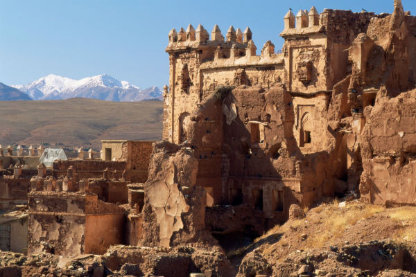
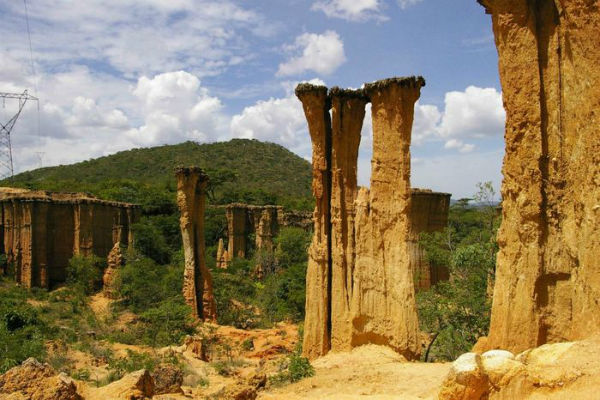
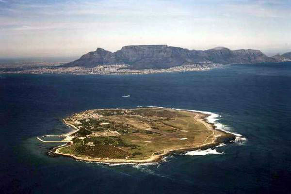

Get to Know Me
Mohamed Abdirahman

Machu Picchu

I would like to visit Machu Picchu for its breathtaking scenery, mysterious history, and ancient architectural wonders.
It offers a unique opportunity to explore the fascinating remnants of an ancient civilization while surrounded by stunning natural landscapes.
Additionally, the sense of mystery surrounding its purpose and construction adds to its allure, making it a truly unforgettable destination for adventurers and history enthusiasts alike.
It offers a unique opportunity to explore the fascinating remnants of an ancient civilization while surrounded by stunning natural landscapes.
Additionally, the sense of mystery surrounding its purpose and construction adds to its allure, making it a truly unforgettable destination for adventurers and history enthusiasts alike.
Foreign language
French is one of the foreign language I would like to learn.
Learning French in Africa offers numerous advantages due to its wide usage across the continent, particularly in government, trade, and tourism sectors.
Proficiency in French opens doors to job opportunities and facilitates communication within Africa and internationally.
Additionally, it provides access to French-speaking cultures, literature, and media, enriching cultural understanding and global perspective.
| English | French |
|---|---|
| The only way to do great work is to love what you do. | La seule façon de faire un travail formidable est d'aimer ce que vous faites. |
| In the middle of difficulty lies opportunity. | Au milieu de la difficulté se trouve l'opportunité |
| Be the change that you wish to see in the world | Soyez le changement que vous souhaitez voir dans le monde |
| The future belongs to those who believe in the beauty of their dreams | L'avenir appartient à ceux qui croient en la beauté de leurs rêves. |
Historical Places in Africa
Telouet Kasbah, Morocco

The Kasbah of Telouet, near Marrakech, was once the residence of T’hami el Glaoui, the governor of Marrakech.
It offers beautifully decorated rooms in Andalusian style, overlooking the Imarene River.
Despite being incomplete and deteriorating in parts, guided tours for $2 provide insights into its history.
Booking through travel agents is recommended.
It offers beautifully decorated rooms in Andalusian style, overlooking the Imarene River.
Despite being incomplete and deteriorating in parts, guided tours for $2 provide insights into its history.
Booking through travel agents is recommended.
Isimila Stone Age site, Tanzania

The Isimila Stone Age Site near Iringa holds archaeological treasures from early hominoids, including tools and bones.
Guided tours, lasting about 3 hours, offer insights into early human and animal civilizations and feature beautiful granite rock reliefs.
Tours, arranged through travel agencies, start early to beat the heat.
Guided tours, lasting about 3 hours, offer insights into early human and animal civilizations and feature beautiful granite rock reliefs.
Tours, arranged through travel agencies, start early to beat the heat.
Robben Island, South Africa

Robben Island, located in Table Bay, Cape Town, served as a place of imprisonment for centuries, notably housing Nelson Mandela during apartheid.
Initially a habitat for wildlife, it was explored by Bartholomew Diaz in 1488. The Dutch later used it as a prison, leading to its UNESCO World Heritage Site designation. Tours depart from V&A Waterfront daily at 9am, 11am, and 1pm, lasting 3 hours and costing $12 to $21 per person.
Initially a habitat for wildlife, it was explored by Bartholomew Diaz in 1488. The Dutch later used it as a prison, leading to its UNESCO World Heritage Site designation. Tours depart from V&A Waterfront daily at 9am, 11am, and 1pm, lasting 3 hours and costing $12 to $21 per person.